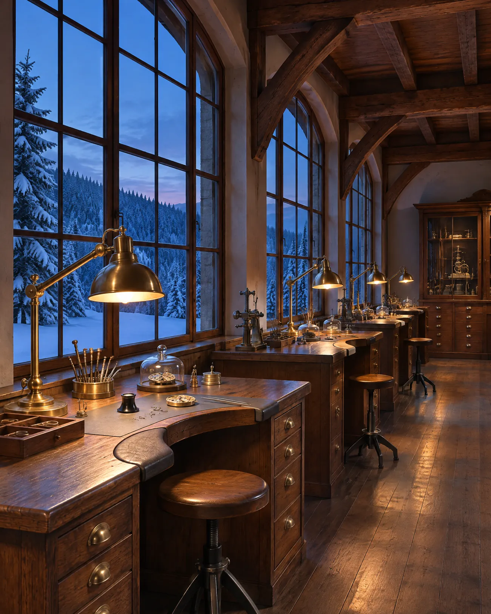

01
L'anglage
Chaque arête des ponts est abattue à 45°, puis polie au bois de gentiane. Comptez une journée par pont.
Manufacture horlogère · Jura
Une seule montre, dessinée, usinée et réglée sous le même toit. Quarante pièces par an, pas une de plus.
01 — Le boîtier
La carrure est satinée au trait, la lunette et les cornes polies à la main sur un disque d'étain. Sous la manchette, elle ne dépasse pas : 10,4 mm, glace bombée comprise.
02 — Le cadran
Le laiton est brossé du centre vers le bord, puis verni en onze couches. Treize index en or sont rivés un à un ; la minuterie chemin de fer est décalquée à l'encre ivoire.
Voir la collection03 — Le mouvement
Platine perlée, ponts anglés à la lime, masse oscillante en or : 194 composants, dont les deux tiers sortent de nos établis. Chaque mouvement est réglé dans cinq positions avant l'emboîtage.
La collection
Même boîtier, même calibre. Seuls changent le métal et le cadran. Les délais tiennent à notre cadence : quarante montres par an.
Acier, cadran bleu nuit soleillé, index et aiguilles dorés, bracelet en veau bleu marine.
Réf. AU39-AN · délai six moisAcier, cadran ivoire grené, aiguilles bleuies à la flamme, bracelet en veau gris.
Réf. AU39-AI · délai six moisOr rose 18 carats, cadran bleu nuit soleillé, bracelet en alligator à écailles carrées.
Réf. AU39-RN · délai neuf moisOr rose 18 carats, cadran en émail grand feu cuit à 820 °C. Douze pièces numérotées par an.
Réf. AU39-RE · sur liste d'attentePrix TTC, bracelet et boucle ardillon compris. Garantie de cinq ans, première révision offerte à la manufacture.


L'atelier
La manufacture occupe une ancienne ferme horlogère, à 1 080 mètres d'altitude. Ses fenêtres donnent au nord, comme autrefois : une lumière égale, sans ombre portée, du matin au soir.
Nous y sommes neuf. Chaque montre est assemblée par un seul horloger, qui signe le fond de son poinçon.

Le savoir-faire
Les machines taillent au micron. La suite revient aux doigts : casser un angle à la lime, tirer un trait droit sur une pierre, poser un balancier sans le voiler.
Rien de cela ne se voit montre fermée. C'est pourtant ce qui la fera tourner juste dans trente ans.
Trois gestes
01
Chaque arête des ponts est abattue à 45°, puis polie au bois de gentiane. Comptez une journée par pont.
02
Près de neuf cents cercles se chevauchent sur la platine, posés un à un à la cheville abrasive.
03
Dix jours d'observation dans cinq positions et à trois températures. Écart toléré : deux secondes par jour.
« On ne voit pas tout de suite ce qu'elle a de plus. On le comprend au bout d'un mois, quand on n'a plus envie d'en porter une autre. »
Rendez-vous
Une heure en tête-à-tête avec un horloger, les quatre modèles sur un plateau, sans obligation. Nous répondons sous deux jours ouvrés.